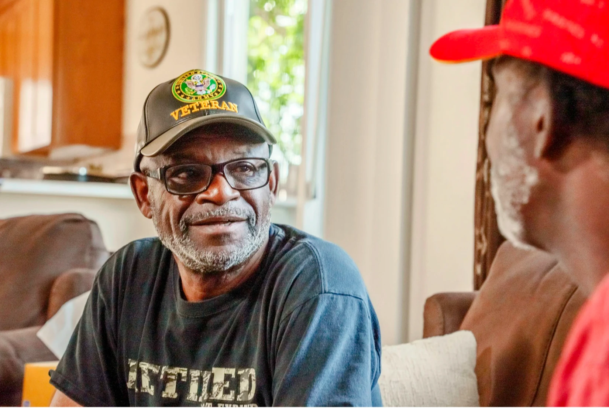

VA home health for veterans in Southern Nevada.
The VA can pay for skilled care in your home through its Community Care program. Here is how it works, how the VA decides who qualifies, and exactly where Alara stands today, so you know what you can act on now.
What VA Community Care covers at home.
Community Care is how the VA pays an approved provider in the community to deliver care it cannot readily provide at a VA facility, including skilled home health. When the VA authorizes it, your covered care comes at no cost to you, and can include:
- Skilled nursing: assessment, wound care, medication management, and disease management at home.
- Physical and occupational therapy: strength, mobility, balance, and returning to daily activities safely.
- Home health aide services: personal care under nursing supervision.
- Medical social work: connecting you to resources and coordinating with your VA care team.
Do you qualify for Community Care?
Community Care is not automatic, and Alara does not decide it, the VA does, case by case. In general, it can apply when:
- You are enrolled in VA health care, or eligible to enroll.
- The VA cannot provide the service you need at a VA facility near you.
- A VA facility is too far away or the wait is too long, under the VA’s drive-time and wait-time access standards.
- You and your VA provider agree that care in the community is in your best interest.
The exact eligibility rules and current access standards are set by the VA at va.gov/communitycare. If you are not enrolled in VA health care yet, enrolling is the first step.
What to ask your VA care team.
Home health through Community Care starts with your VA care team, not with an agency. When you talk to them, ask:
- Whether you qualify for Community Care for home health.
- For a referral and authorization for skilled home health at home.
- Which community providers serve your area, and how to request one.
- Your authorization number, and which services and frequency it covers.
In Region 4, which includes Nevada, the VA’s Community Care Network is administered by TriWest. Your referral and authorization run through it.
Where Alara stands today.
We are being direct about this: Alara is completing enrollment as a VA Community Care Network provider for Region 4. Until that enrollment is active, we cannot bill the VA for your care yet. Three honest things you can do now:
1. Get the VA process moving
Ask your VA care team about Community Care and a home-health referral now, so an authorization is ready the moment our enrollment is active. The steps above are exactly what to raise.
2. Be our first call when we’re VA-ready
Leave your name and number and a nurse calls you back now to answer your questions — and calls you first the day our VA enrollment goes live. No forms, no obligation.
3. Need skilled care sooner?
If another program already covers you, we can start now. Many veterans also did civilian work at the Nevada Test Site, the NNSS, or another DOE site — or their spouse did. That work can open the White Card even while your VA care waits, and it covers home health for life. And for a homebound veteran with a skilled need, Medicare home health often applies today — how Medicare home health works.
For VA care teams and providers.
We are completing our VA Community Care Network enrollment for Region 4. Once it is active, this is how referrals will work, and you are welcome to reach us now to plan a complex case or be notified when we go live.
Once a referral reaches us
- We contact the veteran within 4 business hours.
- We verify the authorization.
- We schedule start of care, typically within 48 to 72 hours.
What a referral includes
- Veteran name and contact information
- VA authorization number
- Physician order (services and frequency)
- Medication list, if available
For a complex case or to be notified when our enrollment is active, reach our clinical director at (702) 814-9630.
